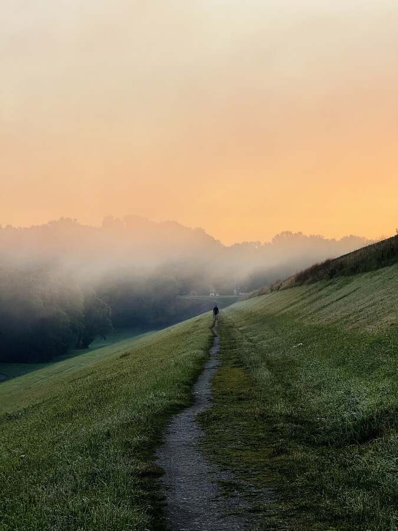
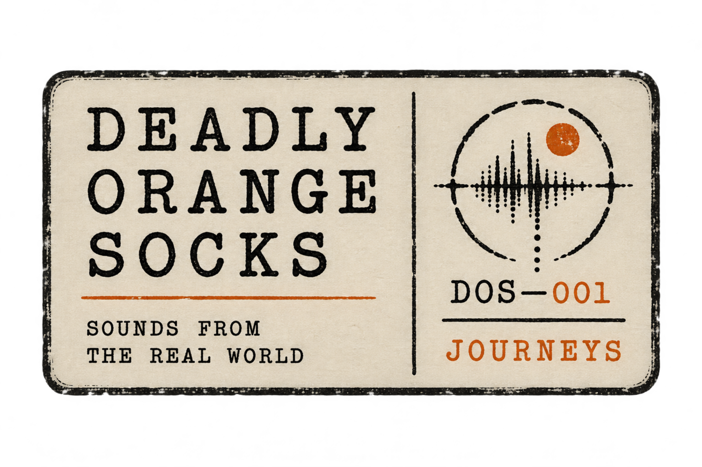
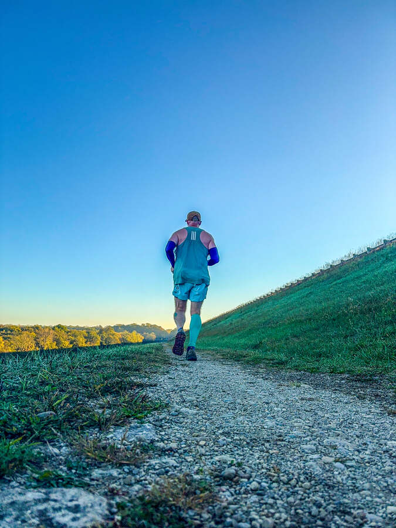
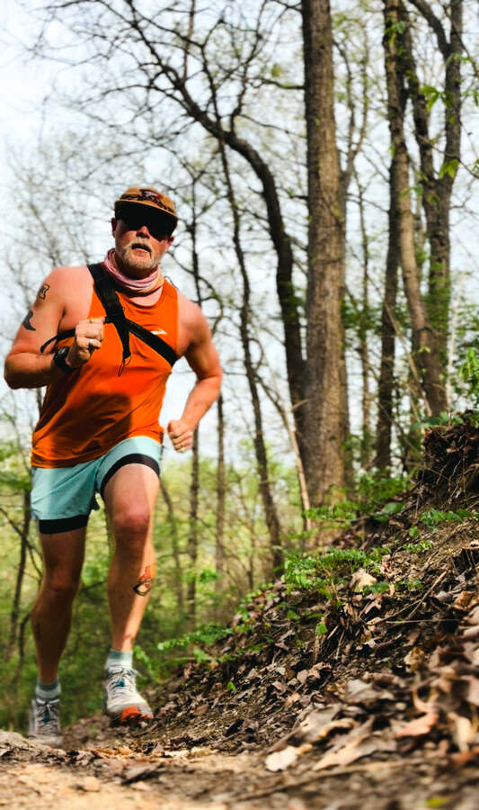
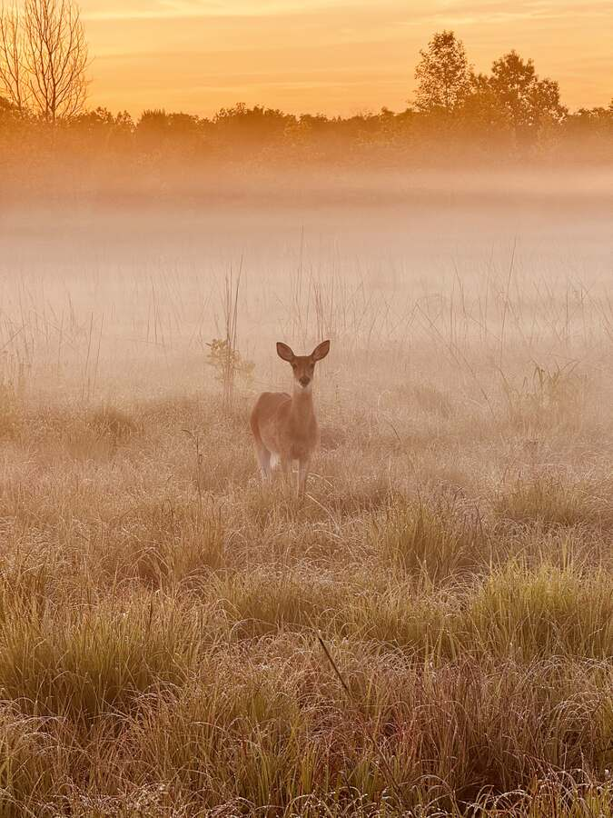
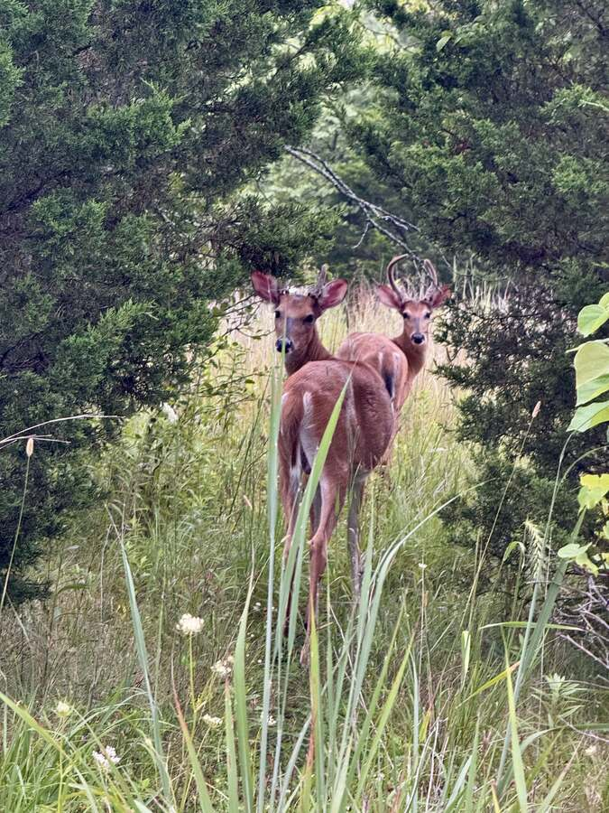
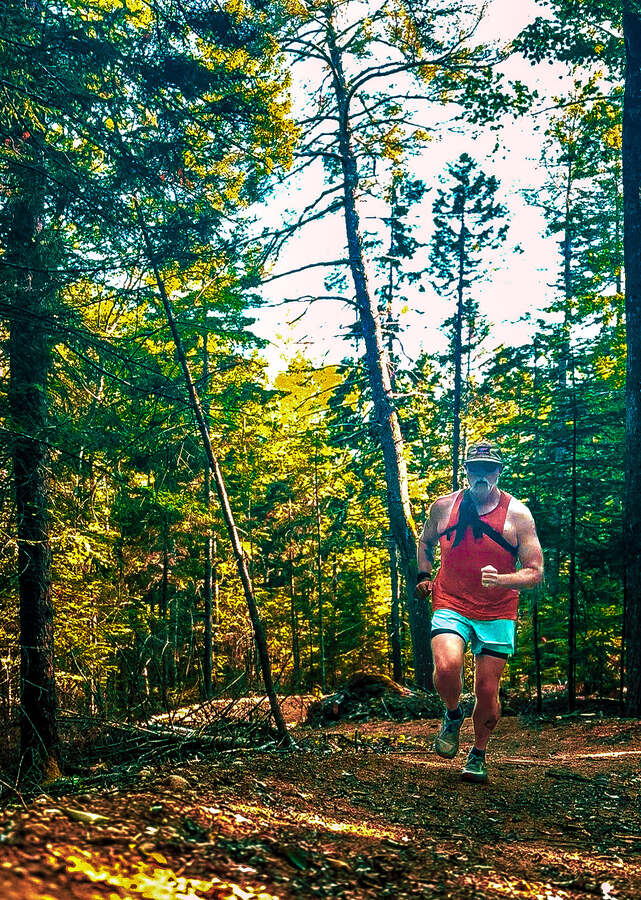

Brian has always been fascinated by music, sounds, and nature. Since the advent of the iPhone, he's been using the voice memo app to record interesting sounds he came across — the most intriguing were always water moving, or insects and birds. He has over 100 memos with snippets of sound from the last 20 years. Over the last few years, running the trails and streets around Troy, it occurred to him that the world he moved through every morning already sounded like music: crickets keeping time, gravel setting a rhythm, a train passing through like a held note. Once he heard it that way, he couldn't unhear it. He started consistently recording these sounds — nothing fancy, just an iPhone tucked into his Spibelt, picking up whatever a run happened to hand him that day — and slowly those recordings turned into something closer to songs. He calls the project Deadly Orange Socks.
With one small exception — a sample from his good friend Ted Hajnasiewicz's song “Star Gazer” — every sound on this EP came from somewhere real: the woods at Englewood MetroPark, a quiet stretch of Duke Park, Hobart Nature Reserve, the streets of downtown Troy, the levee in the rain. Nothing borrowed, nothing pulled from a library. Just one runner, paying closer attention than usual.
Brian is a lover of whiskey and has picked a pairing based on his experience with various whiskeys. Each pairing is meant to be matched with a track. The reason behind the pairing is given below each track description. Of course, these are only suggestions — you may find one better suited to your tastes.
This track is a trail run, built from clips recorded around the Troy area — specifically Englewood MetroPark, Duke Park, and Hobart Nature Reserve. It takes the listener on a trip through the woods in the early morning. The runner travels over gravel, stone, and packed earth. During the journey, they hear the sounds of nature filling the air — crickets, birds, cicadas, and other creatures creating the atmosphere.





On this track, the runner finds themselves running a trail that passes over and near several sections of the same stream. Each part of the stream has its own unique sound, including a small waterfall. Recorded primarily at Englewood MetroPark.
This track brings the runner to a place of rest. They've found an area that's inviting and decide to take a short break — maybe a sip of water, a few recovery breaths. While re-centering, the runner is immersed in bird calls, insects, and other nature sounds. Recorded in the early morning on the trail at Englewood MetroPark.
Our runner is out and about on the tarmac, hearing their hometown come to life in the early morning, Troy, Ohio. The footfalls have a different sound — the pattern is similar to the trail but changes based on the surroundings. The runner finds themselves listening to insects interspersed with the hum of automobiles, and even a train passing by. All aspects of this track were recorded in Troy.
Our runner starts off running with music, then decides to listen to nature's orchestra instead and pauses the song — “Star Gazer,” a great track by Ted Hajnasiewicz — to complete the run. As they finish, they turn the music back on.
As a runner, you get out in all kinds of weather. This run takes place during a rain shower — splashing footsteps, rainfall, and a roll of thunder carry the song, along with an undercurrent of insects. This run takes place primarily on the levee in downtown Troy.
Deadly Orange Socks is the recording project of Brian, a distance runner in Troy, Ohio, who's spent years running trails, roads, and whatever surface and weather showed up that day, and started wondering what it would all sound like as music. Every layer in every track comes from a phone recording made mid-run — footsteps, heartbeat, whatever the run happened to bring. The photos on this page came off that same phone, on those same runs.
Behind the Sound is a music interview show about the creative process — casual, conversational conversations with musicians about how the work actually gets made. Journeys is presented by the show, but stands as its own project.